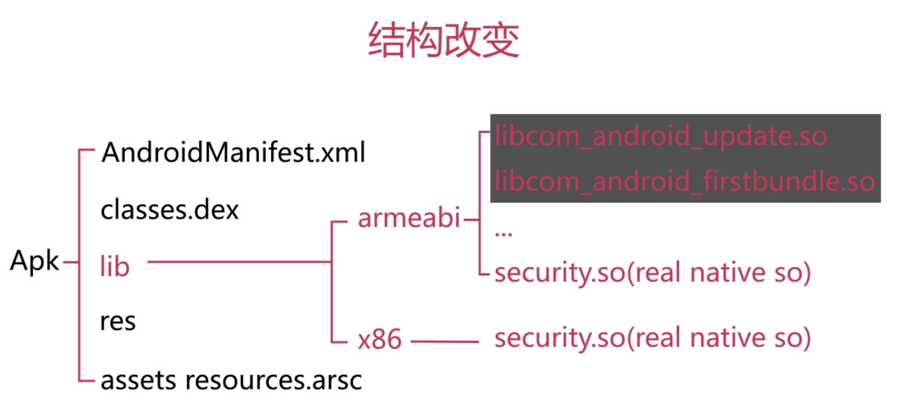
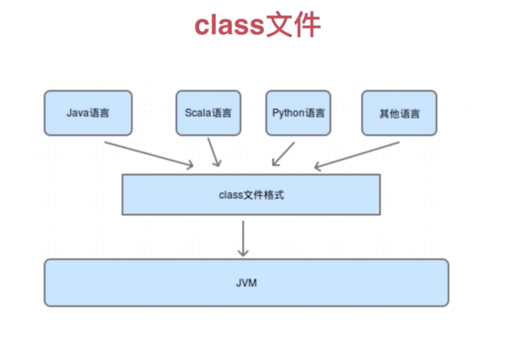
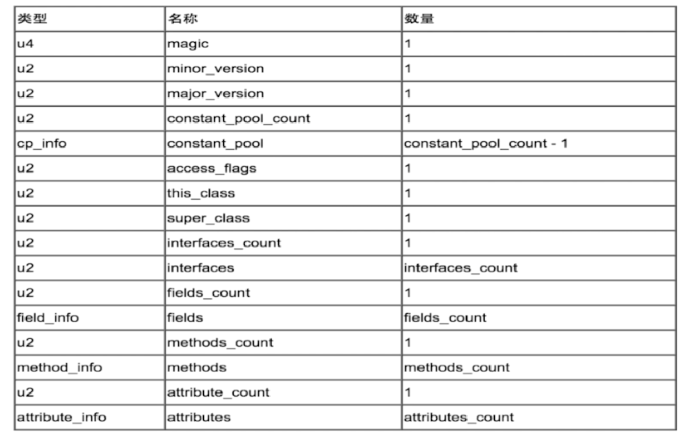
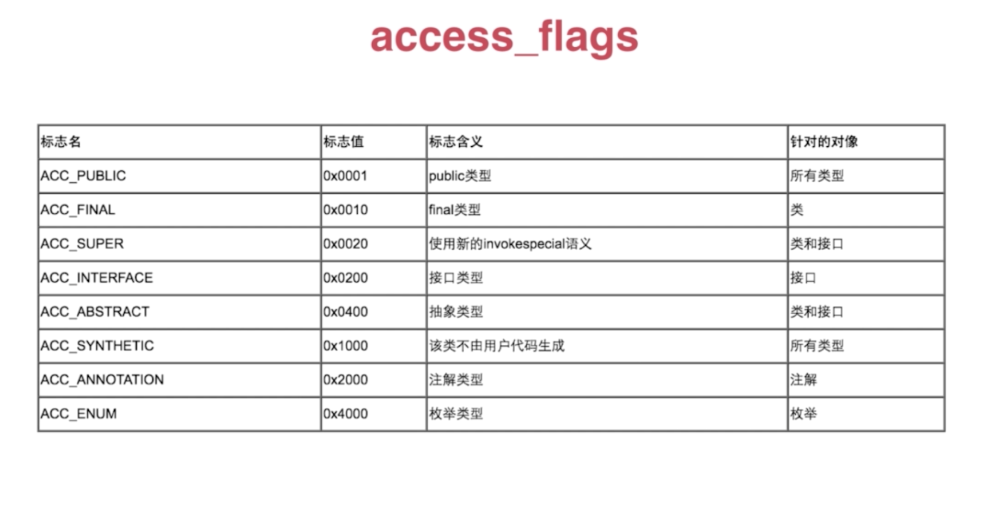
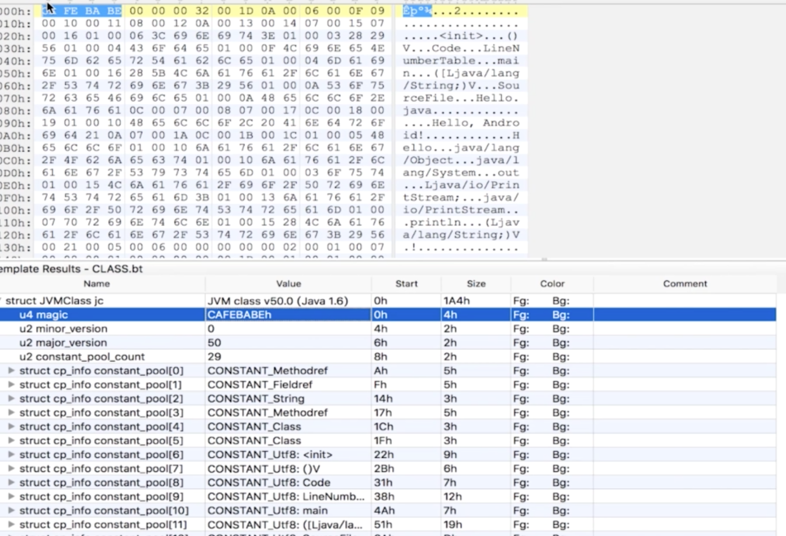
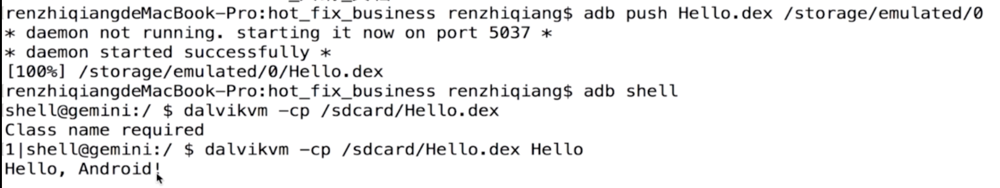
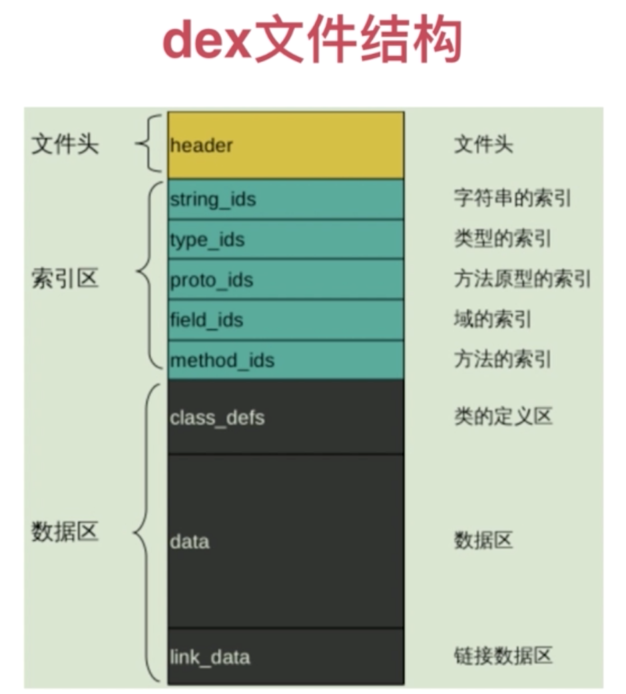
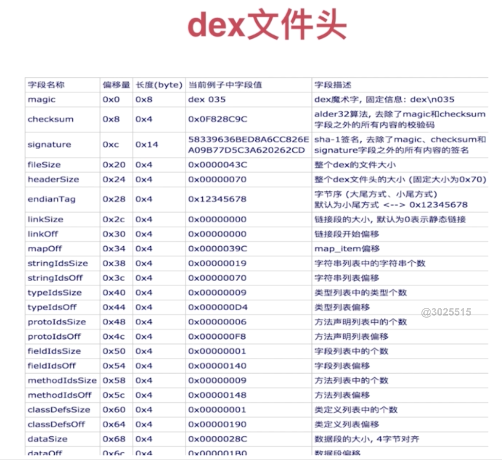
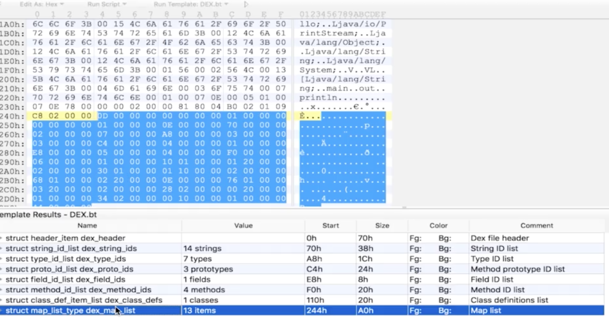
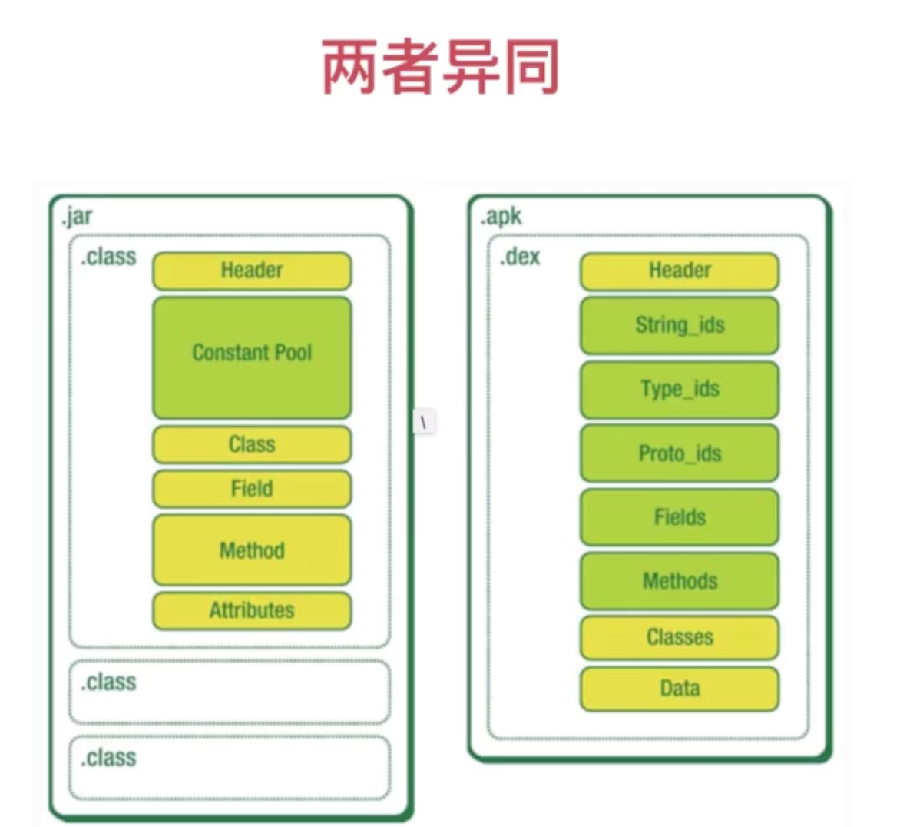

热修复解决的问题
- 刚发布的应用就发现了比较严重的BUG
- 有一些小功能想即时推送给用户使用
插件化解决的问题
- 应用越来越大所带来的各种技术限制
- 应用越来越大所带来的合作开发问题

class文件结构深入解析
基本概念
能够被JVM识别，加载并执行的文件格式

生成class文件
- 通过IDE自动build
- 手动通过javac去生成class文件（执行通过java命令）
class文件作用
- 记录一个类文件的所有信息，是所有（远多余java源代码，如this，super等没有定义可以直接使用）
class文件结构
- 一种8位字节的二进制流文件
- 各个数据按顺序紧密的排列，无间隙
- 每个类、接口、枚举等都单独占据一个class文件

- magic，无符号4字节，是加密段，给虚拟机判断当前class是否被篡改
- minor_version，最小被哪个版本JDK加载
- major_version，当前是由哪个JDK版本生成的
- constant_pool_count，常量池数量，通常是1
- constant_pool，常量池，结构体类型，最核心的部分
- access_flag，作用域标志，public、final等
- this_class
- super_class
- interface_count，继承了多少接口，直接继承的接口
- interface
- fields_count，所有成员变量
- fields，field_info结构体包含每个成员变量的name、所处的类、类型
- methods_count，方法相关
- methods，method_info结构体包含每个方法的名字和类型、accessflag、所处的类
- attribute_count，属性相关
- attributes，上面没有包含的内容都会放在这里，如注解
access_flag

constant_pool
先看几个容易理解的
- CONSTANT_Integer_info
- CONSTANT_Long_info
- CONSTANT_String_info
再看几个复杂的
- CONSTANT_Class_info，类相关信息，不仅记录当前类还记录了引入的类
- CONSTANT_Fieldref_info，当前类中field相关信息，存储的是索引
- CONSTANT_Methodref_info，当前类中method相关信息，存储的是索引
这些索引指向的是CONSTANT_Integer_info、CONSTANT_Long_info等
使用010 editor查看二进制文件

class文件弊端
- 内存占用大，不适合移动端
- 堆栈的加载模式，加载速度慢
- 文件IO操作多，类查找慢（因为每个class只存储了一个java源文件信息）
dex文件结构深入解析
什么是dex文件
能够被DVM识别，加载并执行的文件格式
如何生成一个dex文件
- 通过IDE自动build
- 手动通过dx去生成dex文件（手机里运行dex）
配置dx环境
open ~/.zshrc
添加
# dx
export PATH=${PATH}:/Users/yaoluyang/Library/Android/sdk/build-tools/29.0.3
保存
source ~/.zshrc
生成dex文件
传送到手机并运行

dex文件的作用
- 记录整个工程中所有类文件的信息，是整个工程
dex文件格式详解
- 一种8位字节的二进制流文件
- 各个数据按顺序紧密的排列，无间隙
- 整个应用中所有Java源文件都放在一个dex中（不考虑MultiDex）

- 文件头：记录dex文件信息以及所有字段大致数据分布
- 索引区：定义dex文件所有的类、方法的内容以及存储的位置（方法索引不仅会记录当前类的方法还会记录它所引用的方法以及父类中的方法）
- 数据区：链接是指so
dex文件头（dex文件大小以及各个区段所对应的起始位置、偏移量）


values就是数据区
class文件与dex文件对比
两个异同
- 本质上他们都是一样的，dex是从class文件演变而来的
- class文件存在许多冗余信息，dex会去除冗余并整合
